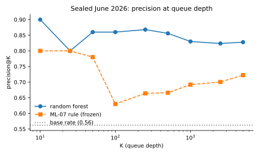
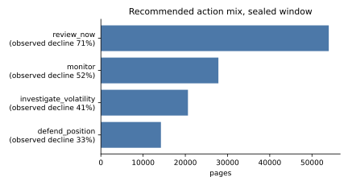
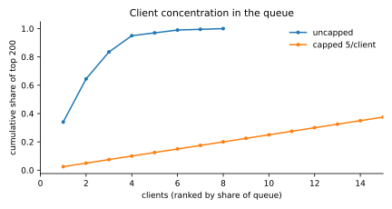

An observational study of 78.8 million daily search-performance rows — and what happened when I fixed the train/test split.
Which pages in a content portfolio are most likely to lose search position next month, and can that be turned into a review queue a person can actually work down? Using the FlyRank pseudonymized warehouse release — 78.8 million daily rows across 104 clients, queried in place with DuckDB over remote Parquet — I framed the question as ranking, labelled a page as declining when its impression-weighted average search position worsened by at least one place between a 90-day feature window and the following month, and compared a learned model against a frozen four-condition hand-written rule on a client-grouped split. On a sealed June 2026 test month the random forest put 90% declining pages in its top 50 against a 56.2% base rate, while the transparent rule reached 78% — and deeper in the queue the rule overtakes it, so the two win at different depths. The same model scored 0.96 under a careless random split that let it memorise clients. The output is a reason-coded review queue with a per-client cap, an abstention gate for portfolios where skill was never measured, and drift monitors. It is decision-support for ordering manual review, not a prediction of any page's fate and not a claim about Google's algorithm.
A content strategist owns a portfolio of a few thousand pages and has time to open perhaps thirty of them this week. Which thirty?
The default answer is a dashboard sorted by traffic. That surfaces the biggest pages, not the ones slipping — and a page that is quietly sliding from position 8 to position 14 is invisible on that list until the traffic has already gone.
So the decision this study supports is narrow and concrete: the order of a manual review queue. One row is one page. The output is a rank, an action, and the reasons behind it. A wrong call costs about an hour of someone's time — and that asymmetry, an hour wasted versus a valuable page left to decay, is why this ends as a ranked list for a human rather than as an automation.
The FlyRank pseudonymized warehouse release (build v20260703): 78,835,655
daily performance rows, 519,606 content items, 104 clients, spanning
2025-01-27 → 2026-06-30. It was never downloaded — DuckDB queried the remote
Parquet in place, aggregating in SQL and returning only small result frames.
Two windows, disjoint by construction:
| Window | Dates | Role |
|---|---|---|
| Feature window | 2026-01-01 → 2026-03-31 | everything the model may look at |
| Outcome window | 2026-04-01 → 2026-04-30 | where the label is measured |
| Sealed test | label month 2026-06 | read once, at the very end |
A page enters the study with at least 100 impressions in the feature window and 30 in the outcome month — 106,461 pages across 42 clients. Position measured on three impressions is noise, so the floor is necessary; its consequences are in the limitations.
Whole families of columns were excluded on purpose. The most painful:
fact_content_query_90d, which holds query-mix diversity — probably the strongest
feature family available for this question — has a fixed window opening 2026-04-02,
inside my outcome month. Using it would mean showing the model part of the answer. That
was settled by a date check, not a judgement call. Also excluded: anything label-derived; the
platform's own optimisation flags, which encode a decision someone already made rather than a fact
about the world; and every pseudonymous ID, which are for grouping only.
The release carries no client names, domains, URLs, page titles or raw queries. Every identifier shown anywhere in this study is a truncated pseudonym.
The label. A page is declining when its impression-weighted average search position worsens by at least 1.0 places between the two windows. Impression weighting matters: averaging daily position figures would let a 2-impression day count as much as a 20,000-impression one. Base rate: 56.7%.
Two signals checked, then a baseline frozen. Before any model I tested two premises behind real FlyRank flags. Staleness — the reasoning behind refresh flags — came back FALSE: the last-update field is a live snapshot, so 81.8% of pages carry an update date after the decision moment, and on the pages that are testable the decline gradient is 0.586 against a 0.567 base. CTR-for-position came back MIXED: it supports the claim on page 1 (+10.7 points, n = 50,913) and vanishes below position 20.
What survived became the rule: a page needs review if its ranking was already sliding before the cut-off (3 points), and additionally if it sits shallow enough to have somewhere to fall, is capturing fewer clicks than its tier normally does, is unstable, or is seen often enough to matter (1 point each). Each page gets exactly one reason code and one action.
The split — the decision that mattered most. Pages are not independent. They
come in client portfolios sharing a CMS, a template, a publishing cadence and one team's habits.
A random split puts a client's pages on both sides of the line, letting a model recognise
the client and recite that client's average outcome instead of learning what precedes a decline.
So: GroupKFold on client, with every page scored by a model that never saw its
portfolio.
Leakage checks. Eight assertions run in the notebooks — no label-derived columns, windows verified disjoint, no decision flags, no IDs as features, folds asserted non-overlapping, base rate printed beside every metric, all metrics out-of-fold. Plus a positive control: deliberately planting the outcome column into the feature set jumps AUC from 0.659 to 0.950, which proves the harness can actually fail. A clean result only means something if the test is capable of catching a dirty one.
Development window, grouped by client, out-of-fold:
| Model | ROC AUC | P@50 | P@500 |
|---|---|---|---|
| base rate (random pick) | 0.500 | 0.567 | 0.567 |
| logistic regression | 0.617 | 0.740 | 0.682 |
| decision tree (depth 4) | 0.612 | 0.320 | 0.362 |
| hand-written rule (frozen) | 0.637 | 0.820 | 0.916 |
| random forest | 0.651 | 0.880 | 0.844 |
Sealed June 2026 month — a month the model was never fitted on:
| Evaluation | base rate | ROC AUC | P@50 |
|---|---|---|---|
| sealed, all clients | 0.562 | 0.692 | 0.900 |
| sealed, unseen clients only | 0.295 | 0.608 | 0.600 |
| sealed, frozen rule | 0.562 | 0.656 | 0.780 |

Permutation importance is dominated by recent position movement — about three times the weight of the next feature — followed by current position, volatility, and how consistently the page appears at all. Every one of the top four is ranking behaviour.
Content properties barely register. Word count, character count, CPC and backlinks sit near the bottom. For a study about ranking signals, the observed answer is that how a page has recently been ranking says far more about where it goes next than what the page is made of.
Two negative results are worth stating plainly, because both contradict common SEO advice. Content age carries little weight once ranking momentum is in the model — the "refresh the old stuff" heuristic finds no support here. And the "expand thin content" intuition finds none either: length is close to irrelevant in this portfolio.
A dominant feature is the classic symptom of leakage, so I ran the standard test: retrain without it. A label-derived feature collapses the score toward chance when removed; this one costs 0.071 AUC and degrades gracefully. It is a strong signal, not a leak.
Where it is wrong. Per-client AUC ranges from about 0.48 to 0.77. For at least one portfolio with hundreds of pages, the model is no better than a coin flip. A single pooled number hides that completely — the model does not "work", it works for some portfolios.
Work the queue top-down. Each row's action comes from which evidence fired, not from how high the score is:
| Action | Evidence | What to do | Pages |
|---|---|---|---|
review_now | already sliding and on page 1–2 | open it, find what changed, refresh if warranted | 53,978 |
investigate_volatility | unstable, no clear direction | look for technical or SERP-layout causes before touching content | 20,622 |
defend_position | visible, shallow, stable | leave the content alone; watch weekly | 14,222 |
monitor | everything else | nothing this cycle | 27,834 |

review_now is both the largest group and the
one where the observed decline rate is highest — which is the behaviour a triage rule should
have.
Two rules ship with the queue. Cap each client, for the reason above. And abstain where skill was never measured — six of 28 measured clients fall below AUC 0.60 and are served no queue at all, because a queue that is wrong for a portfolio is worse than no queue.
Never automated: no auto-rewriting, no auto-deindexing or deletion, no client-facing performance reporting or billing, no probability language, and no causal claim.
Everything runs from a fresh clone with a Hugging Face read token:
pip install -r requirements.txt
pip install duckdb pyarrow
export HF_TOKEN=hf_...
python work/scripts/build_modeling_frame.py --sealedThen the notebooks in order: w03_data_contract → w04_baseline_score →
w05_model → w06_validation_audit → w07_action_playbook →
capstone. Heavy scans cache on first run.
Seed 20260808 throughout. pandas 3.0.3, numpy 2.5.1, scikit-learn 1.9.0, duckdb
1.5.5. Tree-ensemble figures move a point or two across library versions, so the ~1.5× lift over
base rate is the stable claim, not the third decimal.
The sealed evaluation leaves receipts, both committed: the script that builds the sealed frame
(committed before that frame was ever read, and producing the development and sealed
frames from the same code so they cannot drift), and the metrics file it produced. Every number on
this page traces to a JSON in work/outputs/.
Built on the FlyRank ML Internship dataset — https://flyrank.ai. The warehouse release is a pseudonymized export prepared for this internship. All analysis, errors and opinions here are mine. Track leads: Mirza Ašćerić (ML) and Hole (data engineering).